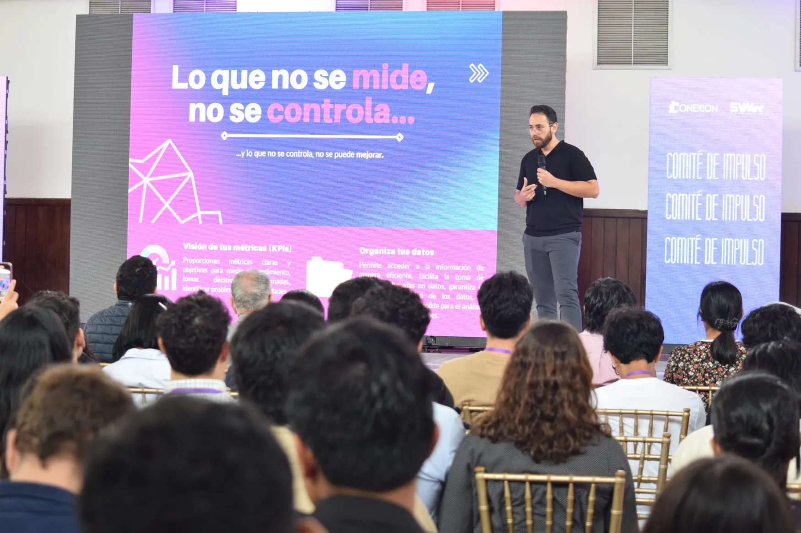
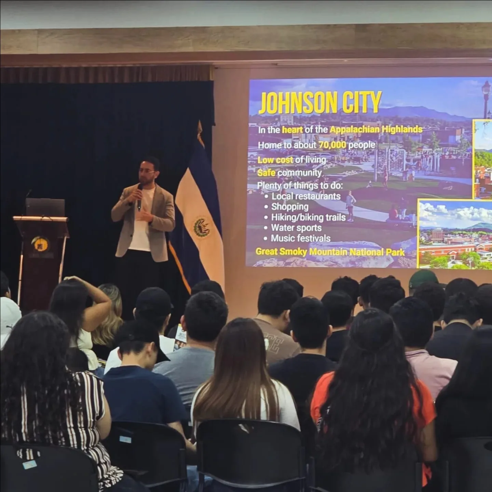
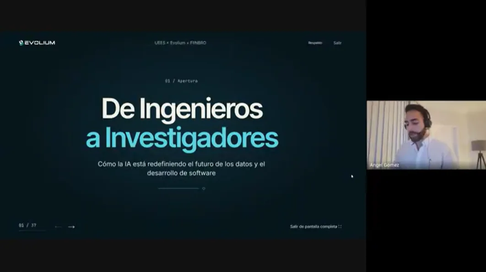
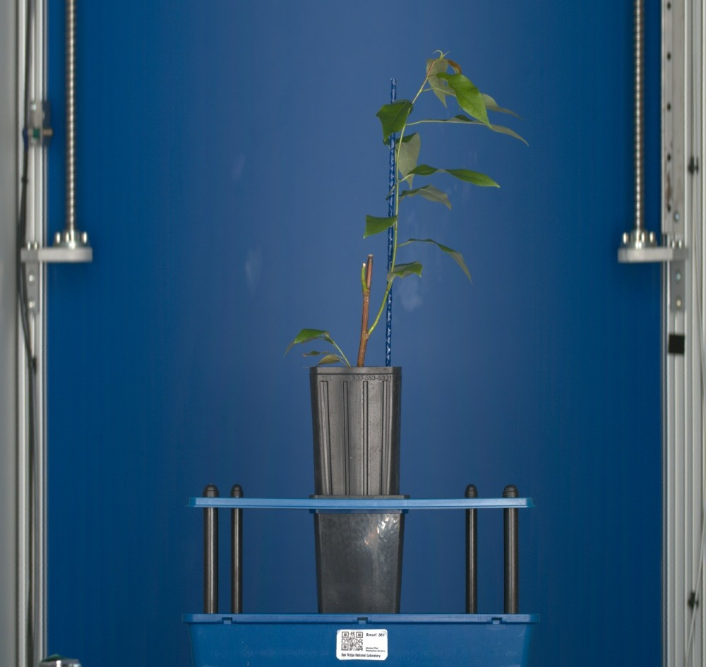
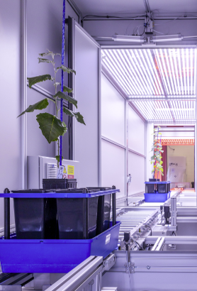
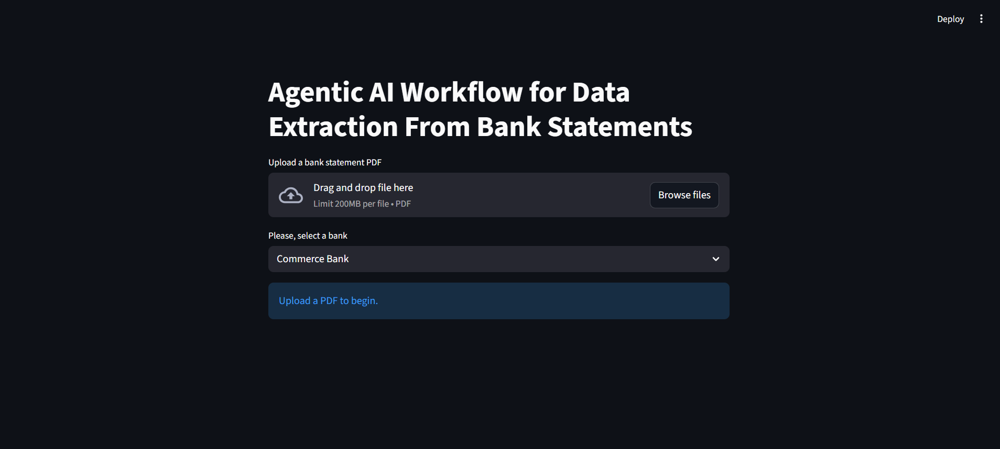
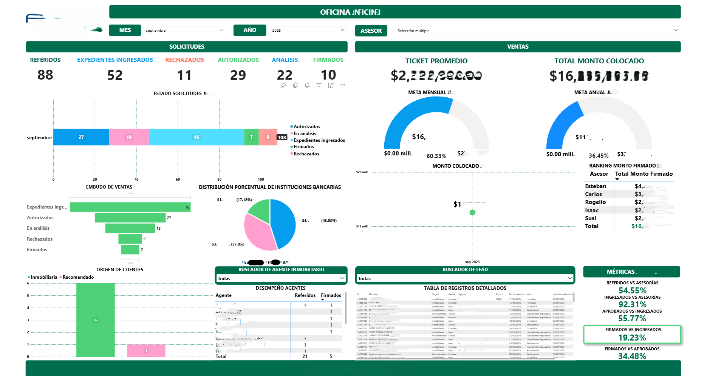
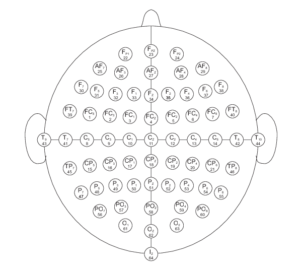
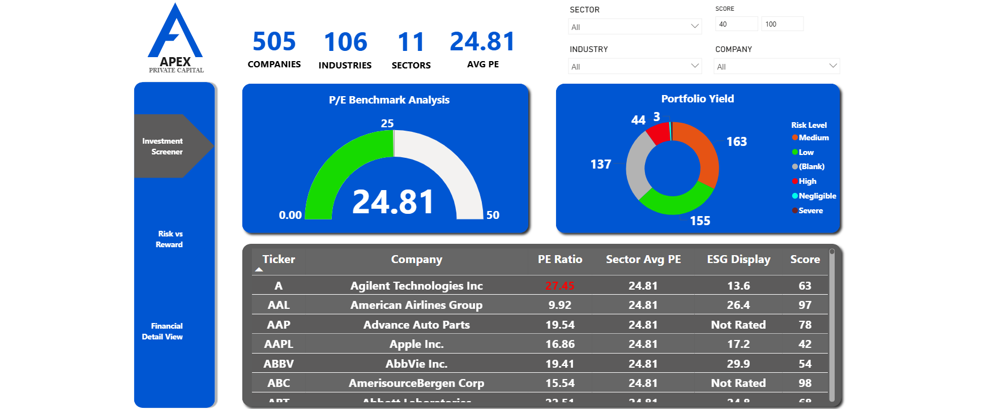

How to Make the Best Out of Your Data
A talk on turning available data into understandable metrics, useful decisions, and opportunities for improvement.
I'm an engineer and data scientist whose work has moved between machine learning research and the realities of enterprise data systems. At Oak Ridge National Laboratory, I worked with deep learning and complex 3D sensor data. Today, as a Data Governance Lead supporting CenterPoint Energy, I work on the foundations that organizations depend on to manage and use data responsibly.
Those experiences have shaped my interest in a question that extends beyond model performance: what allows intelligent systems to move from promising experiments to reliable, accountable use in the real world?
Presentations on working with data, graduate study, and the transition from engineering to research.

A talk on turning available data into understandable metrics, useful decisions, and opportunities for improvement.

Shared lessons from graduate study in Applied Data Science at East Tennessee State University, research experience, and possible academic pathways with UEES students.

A webinar on how AI is changing data and software careers, and why questioning, investigating, evaluating, and governing systems matter increasingly.
Applied machine learning, information systems, and the organizational conditions for responsible AI use.
Distinguishing plant structures in 3D sensor data requires a model to work with noisy observations and severe class imbalance. This ETSU team project, in collaboration with ORNL, studied geometry-aware learning for that problem.
Completed in 2025. The linked code documents an unpublished research manuscript, not a peer-reviewed publication.
Research code & documentation


A proposed empirical study investigating whether governance maturity helps explain which organizational AI initiatives move beyond experimentation, remain operational, and create sustained value.
Research proposal and planned study. No empirical findings, funded-project status, or publication are claimed.
Research proposal summary in CVCo-authored graduation research examining how a centralized data model and Power BI reporting improved access to information and supported monitoring of FUNPRES's “Aprendo para Brillar” education initiative.
Completed undergraduate graduation research, catalogued as a thesis. This is distinct from a peer-reviewed journal article.
Institutional repositoryMy current work also motivates questions about LLM-mediated governance workflows, including tool permissions, retrieved context, prompt manipulation, and human oversight. These remain research questions rather than validated findings.
Engineering work in document extraction, data infrastructure, and predictive modeling.

An agentic workflow routes text and scanned bank statements to specialized extraction pipelines, with PASS / FAIL / UNCERTAIN checks and bounded repair.
Checks reuse extracted content; they do not independently verify the source document.
View repositoryFlask webhooks and scheduled API synchronization feed PostgreSQL on Render, supporting eight Power BI dashboards and traceable event history.
View repository

A Conv1D CNN classified left versus right fist imagery from PhysioNet EEG data. The repository reports 76.61% pooled accuracy and 51.8% average subject-wise accuracy, highlighting a generalization gap.
View repository
A prototype decision support system combining financial and ESG data, Python ETL, MySQL, and Power BI. Data quality checks address ticker mismatches and missing ESG coverage.
View repositoryA completed coursework project using logistic regression in R on 25,000 records. The repository reports test AUC 0.662; this exploratory model has not been validated for clinical use.
View repositoryA Python desktop tool extracts roaming and long-distance charges from billing PDFs into Excel reports using rule-based parsing and a Tkinter interface.
View repositoryMore applied projects and code: GitHub repositories
Graduate study and research alongside work in enterprise data systems.
East Tennessee State University
Machine learning, statistics, data management, decision systems, and applied research. GPA: 3.79 / 4.00.
Universidad Evangélica de El Salvador
Software engineering, information systems, analytics, and graduation research.
CenterPoint Energy · Contract assignment
Enterprise governance spanning 20 business domains; stewardship, data quality, metadata, and responsible AI-enabled workflows.
East Tennessee State University, International Enrollment and Services
Power BI reporting on international students' sense of belonging, student engagement, and onboarding.
AES El Salvador
BigQuery, SAP reconciliation, semantic data models, and enterprise reporting governance.
Resultier
AWS EC2, Linux, Docker, GitHub Actions, and deployment automation.
Executel
Data processing, analytics, reporting automation, and operational information systems.
The Office Gurus
Operational and financial data analysis, Excel/VBA automation, and reporting.
Working methods. Python and SQL for data processing; PyTorch and PyTorch Geometric for modeling; BigQuery, Atlan, metadata and lineage, data quality, and BI systems for enterprise work.
I welcome conversations about doctoral research, supervision, and collaboration in Information Systems, Data & AI Governance, Responsible AI, and Applied Machine Learning.
angomezu@gmail.com